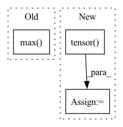

Pattern ID :17073

Before Change
delta = -x_min / zero_point
elif self.scale_method == "mse":
// we always use symmetric quantization in mse mode
x_absmax = x.abs().max()
best_score = 1000
for i in range(80):
new_max = x_absmax * (1.0 - (i * 0.01))
x_q = self.quantize(x, new_max)
After Change
if zero_point != 0:
delta = -x_min / zero_point
// convert delta to tensor for further optimization
delta = torch.tensor(delta).type_as(x)
elif self.scale_method == "mse":
// we always use symmetric quantization in mse mode
best_score = 1000
In pattern: SUPERPATTERN
Frequency: 3
Non-data size: 3
Instances
Fragment ID: 57219425
Project Name: yhhhli/brecq
Commit Name: 2cbdc7e8dbd0407856bb4f35ec0a23d2995ef72d
Time: 2021-02-17
Author: loafyuhang@gmail.com
File Name: quant/quant_layer.py
M Class Name: UniformAffineQuantizer
N Class Name: UniformAffineQuantizer
M Method Name: init_quantization_scale(3)
N Method Name: init_quantization_scale(3)
M Parent Class: nn.Module
N Parent Class: nn.Module
M File Name: quant/quant_layer.py
N File Name: quant/quant_layer.py
M Start Line: 91
M End Line: 118
N Start Line: 97
N End Line: 128
'>
Before Change
grid_init = torch.stack([thetas.cos(), thetas.sin(), thetas.cos()], -1) // TODO
// [NumHeads, FeatureLevels, NumPoints, Offset]
grid_init = (grid_init / grid_init.abs().max(-1, keepdim=True)[0]).view(self.n_heads, 1, 1, 3).repeat(1, self.n_levels, self.n_points, 1)
for i in range(self.n_points):
grid_init[:, :, i, :] *= i + 1
After Change
constant_(self.sampling_offsets.weight.data, 0.)
// See paper p13
grid_init = torch.cartesian_prod(torch.tensor([-1, 0, 1]), torch.tensor([-1, 0, 1]), torch.tensor([-1, 0, 1])).to(dtype=torch.float32)
if self.n_heads == 26: // sample in 26 directions
grid_init = grid_init[torch.nonzero(torch.abs(grid_init).sum(dim=1)).squeeze()] // Get rid of origin
elif self.n_heads == 6: // sample in 6 directions
grid_init = grid_init[torch.nonzero(torch.logical_and(torch.abs(grid_init).sum(dim=1) < 2, torch.abs(grid_init).sum(dim=1) > 0)).squeeze()]
else:
raise ValueError("Only nheads of value 26 or 6 are supported.")
'>
Fragment ID: 57219427
Project Name: bwittmann/transoar
Commit Name: fa86cda78f79e61cc6617f73268e684f56636b3f
Time: 2021-12-16
Author: bastian.wittmann@tum.de
File Name: transoar/models/ops/modules/ms_deform_attn.py
M Class Name: MSDeformAttn
N Class Name: MSDeformAttn
M Method Name: _reset_parameters(1)
N Method Name: _reset_parameters(1)
M Parent Class: nn.Module
N Parent Class: nn.Module
M File Name: transoar/models/ops/modules/ms_deform_attn.py
N File Name: transoar/models/ops/modules/ms_deform_attn.py
M Start Line: 66
M End Line: 70
N Start Line: 66
N End Line: 75
'>
Before Change
heatmap = cv2.resize(heatmap[0], _input.shape[2:])
heatmap = heatmap - np.min(heatmap)
heatmap = heatmap / np.max(heatmap)
return heatmap
After Change
def grad_cam(self, _input: torch.FloatTensor, _class: List[int]) -> np.ndarray:
if isinstance(_class, int):
_class = [_class] * len(_input)
_class = torch.tensor(_class).to(_input.device)
feats = self._model.get_fm(_input).detach() // (N,C,H,W)
feats.requires_grad_()
_output: torch.FloatTensor = self._model.pool(feats)
'>
Fragment ID: 57219429
Project Name: ain-soph/trojanzoo
Commit Name: 2bf7c2a2e8acba2592ee17d60d1a59b7bd1bbfe5
Time: 2020-11-24
Author: ain-soph@live.com
File Name: trojanzoo/model/imagemodel.py
M Class Name: ImageModel
N Class Name: ImageModel
M Method Name: grad_cam(3)
N Method Name: grad_cam(3)
M Parent Class: Model
N Parent Class: Model
M File Name: trojanzoo/model/imagemodel.py
N File Name: trojanzoo/model/imagemodel.py
M Start Line: 206
M End Line: 222
N Start Line: 190
N End Line: 212